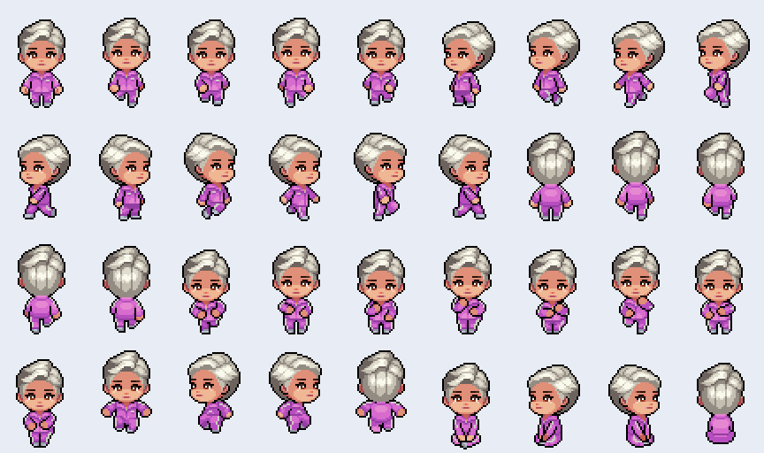

ตรวจ 19 ตุลาคม 2026 จาก FinGW บน ZEP ด้วย REA controlled browser scenario ใน Chrome profile ชั่วคราว และอ่าน JavaScript ที่หน้าโหลดจริง
ดึงภาพได้จริง: บันทึก PNG ตัวละครสำเร็จ แยก 36 เฟรม และทดลองประกอบภาพจาก 4 ชั้นสำเร็จ ต่อมาเจ้าของ workspace สั่งดาวน์โหลดและนำไปใช้ จึงดาวน์โหลดครบ 2,224 ไฟล์ตาม catalog (25,714,774 ไบต์) และเชื่อมเข้าระบบตัวละครของ Assemble แล้ว รูปอยู่ใน ../../public/characters/zep/ และผลดาวน์โหลดพร้อม SHA-256 อยู่ใน download-results.json
หน้าแต่งตัวเลือกแบบและสีได้ทุกแบบใน catalog พร้อมพรีวิวสี่ทิศ บันทึกผ่าน API เดิมและแสดงในโปรไฟล์/รายชื่อ/แชต/แผนที่ รูปต้นฉบับเก็บครบทุกเฟรม ส่วน renderer ใช้ยืนและเดินสี่ทิศ ผลตรวจ Chrome จริงอยู่ใน integration-verification.json และ ภาพหน้าจอ TypeScript, production build และ 33 tests ผ่าน สิทธิ์การใช้งานภายนอกยังไม่ยืนยัน

ตัวละครมาตรฐานเป็นภาพ 2D sprite sheet ไม่ใช่โมเดล 3D โค้ดฝั่งเว็บใช้ Phaser มีทั้งแบบ preset ที่โหลด PNG รวมสำเร็จ และแบบ individual ที่โหลดชิ้นส่วนแล้ววาดทับบน Canvas ตามลำดับ skin → face → clothes → hair → mask → glasses จากนั้นลงทะเบียนเป็น sprite sheet เฟรมละ 48×64 พิกเซล Canvas ขนาด 432×256 จึงมี 9 คอลัมน์ × 4 แถว รวม 36 เฟรม
Catalog สาธารณะมี categories, shapes, parts, partId, hex, imageVersion และ acquisitionMode ตัวเลือกสีสัมพันธ์กับ partId ของรูป ไม่ควรสรุปว่าเว็บย้อมสีทุกชิ้นด้วย shader จากค่า hex ในการตรวจครั้งนี้ รูปทรงใน catalog: hair 117, clothes 83, face 80, skin 13, glasses 13 และ mask 0 รายการ มีทั้ง free และ purchase คำว่า free ใน catalog ยังไม่ได้ยืนยันสิทธิ์นำไปใช้ภายนอก
พบเส้นทางแยกสำหรับ NFT ที่โหลด JSON ระบุ image/frame_width/frame_height ด้วย แต่ไม่ได้ทดสอบ avatar ประเภทนั้น
| ท่า | เลขเฟรม เริ่มที่ 0 เรียงซ้ายไปขวา |
|---|---|
| ยืนนิ่ง หน้า / ซ้าย / ขวา / หลัง | 0 / 5 / 10 / 15 |
| เดิน หน้า / ซ้าย / ขวา / หลัง | 1–4 / 6–9 / 11–14 / 16–19 |
| เต้น | 20–27 |
| กระโดด หน้า / ซ้าย / ขวา / หลัง | 28 / 29 / 30 / 31 |
| นั่ง หน้า / ซ้าย / ขวา / หลัง | 32 / 33 / 34 / 35 |
animation definitions ระบุ 8 fps; ท่ายืนนิ่งและนั่งใช้เฟรมเดียว ข้อมูลนี้มาจากโค้ด shipped bundle ไม่ได้พิสูจน์ทุกท่าด้วยการกดเล่นจริง รูปแบบตัวอย่าง Blueman ในเอกสารอาจใช้จำนวนเฟรมต่างกัน จึงไม่ควรยึด layout ของ tutorial แทนไฟล์จริง
เส้นทางที่ยืนยัน: /assets/sprites/avatar/12-33-66-178.png สำหรับ preset, /assets/sprites/{slot}/{id}.png?4 สำหรับชั้นแยก และภาพโปรไฟล์บน CDN ใน /static/assets/baked-avartar-images/ การมี URL รูปโปรไฟล์ไม่ได้แปลว่าเป็น animation sheet เดียวกัน รอบแรกตรวจเฉพาะตัวอย่าง ต่อมาดาวน์โหลด part PNG ครบ catalog ตามคำขอ โดยไม่ได้เรียกซื้อสินค้า ใช้ credentials หรือแก้สิทธิ์ในบัญชี ZEP
ทางเทคนิคสามารถใช้ PNG นี้กับ renderer ที่รองรับ sprite sheet หรือแยกเป็นภาพเดี่ยวได้ทันที แต่ยังไม่พบหลักฐานการให้สิทธิ์นำกราฟิกตัวละครของ ZEP ไปใช้ในเว็บหรือเกมภายนอก การดาวน์โหลดสำเร็จหรือรายการเป็น free ไม่ใช่หลักฐาน license สำหรับใช้นอกบริการ เอกสารทางการ Changing Avatar Image ก็เตือนเรื่องลิขสิทธิ์ของภาพที่ไม่ได้สร้างเอง จึงควรขอเงื่อนไขสิทธิ์จาก ZEP ก่อนนำไฟล์เหล่านี้ไปเผยแพร่ในผลิตภัณฑ์
สำหรับ Assemble ใช้แนวทางเดียวกันได้โดยวาดชิ้นส่วนเอง แล้วรวมชั้นตาม frame layout นี้ จะได้ระบบแต่งตัวและ animation โดยใช้ asset ที่มีสิทธิ์ชัดเจน
สรุป network evidence เก็บเฉพาะ response ที่เกี่ยวกับ avatar ไม่ใช่ bundle ครบชุด ภายในมี URL และสถานะ HTTP 200 ที่โหลดจริง; ข้อความโค้ดพร้อม character offset เก็บ class lh (Canvas composer), lm (layer loader), ly (preset/individual/NFT route) และ animation definitions ใน shipped/876.be6f659a7165c94e.js
Runtime Evidence: ev_818611552fd7d4f4894846a3dc127418c76495856ea0e971d4076dabd686e75dStatic REA วิเคราะห์เฉพาะหนึ่ง bundle จากไฟล์ที่เก็บ 21 ไฟล์ parse สำเร็จ แต่ semantic graph จำกัด 1,000 nodes และมี coverage partial; ข้อสรุปการประกอบและเลขเฟรมตรวจข้อความโค้ดตรงเพิ่มเติม ไม่อ้างว่าถอดระบบทั้งหมดครบ ไม่ได้ตรวจ backend ที่สร้างรูป preset, ไฟล์ต้นฉบับงานวาด หรือ license ภายนอก และไม่ได้ทดสอบ animation ทุกท่าผ่าน UI